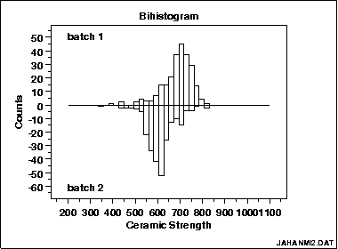

|
1.
Exploratory Data Analysis
1.3. EDA Techniques 1.3.3. Graphical Techniques: Alphabetic
|
|||
|
Purpose: Check for a change in location, variation, or distribution |
The bihistogram is an EDA tool for assessing whether a
before-versus-after engineering modification has caused a change in
|
||
|
Sample Plot: This bihistogram reveals that there is a significant difference in ceramic breaking strength between batch 1 (above) and batch 2 (below) |

From the above bihistogram, we can see that batch 1 is centered at a ceramic strength value of approximately 725 while batch 2 is centered at a ceramic strength value of approximately 625. That indicates that these batches are displaced by about 100 strength units. Thus the batch factor has a significant effect on the location (typical value) for strength and hence batch is said to be "significant" or to "have an effect". We thus see graphically and convincingly what a t-test or analysis of variance would indicate quantitatively. With respect to variation, note that the spread (variation) of the above-axis batch 1 histogram does not appear to be that much different from the below-axis batch 2 histogram. With respect to distributional shape, note that the batch 1 histogram is skewed left while the batch 2 histogram is more symmetric with even a hint of a slight skewness to the right. Thus the bihistogram reveals that there is a clear difference between the batches with respect to location and distribution, but not in regard to variation. Comparing batch 1 and batch 2, we also note that batch 1 is the "better batch" due to its 100-unit higher average strength (around 725). |
||
|
Definition: Two adjoined histograms |
Bihistograms are formed by vertically juxtaposing two histograms:
|
||
| Questions |
The bihistogram can provide answers to the following questions:
|
||
|
Importance: Checks 3 out of the 4 underlying assumptions of a measurement process |
The bihistogram is an important EDA tool for determining if a factor "has an effect". Since the bihistogram provides insight into the validity of three (location, variation, and distribution) out of the four (missing only randomness) underlying assumptions in a measurement process, it is an especially valuable tool. Because of the dual (above/below) nature of the plot, the bihistogram is restricted to assessing factors that have only two levels. However, this is very common in the before-versus-after character of many scientific and engineering experiments. | ||
| Related Techniques |
t test (for shift in location) F test (for shift in variation) Kolmogorov-Smirnov test (for shift in distribution) Quantile-quantile plot (for shift in location and distribution) |
||
| Case Study | The bihistogram is demonstrated in the ceramic strength data case study. | ||
| Software | The bihistogram is not widely available in general purpose statistical software programs. Bihistograms can be generated using Dataplot and R software. | ||